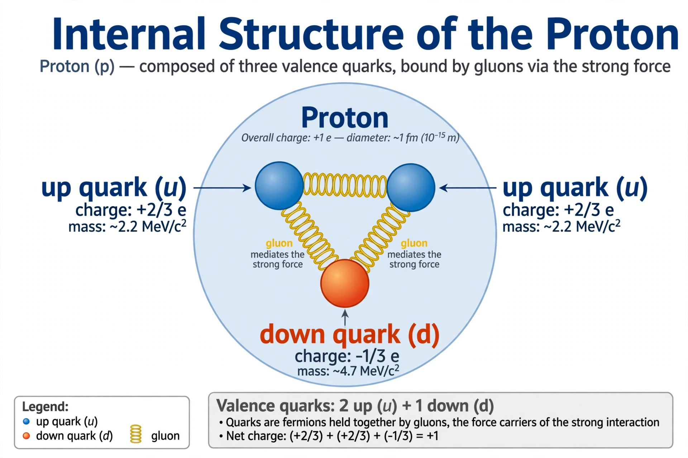

Proton
From Wikipedia, the free encyclopedia

Proton quark diagram (image regenerated from memory)
A proton is a stable subatomic particle with a positive electric charge equal and opposite to the electron's, and a mass about 1,836 times the electron's (roughly 1.673×10⁻²⁷ kg). Along with neutrons it forms atomic nuclei; the number of protons (atomic number) defines the chemical element.
Ernest Rutherford identified the proton in experiments of 1917–1920, producing it by alpha bombardment of nitrogen — the first induced nuclear reaction — and recognising hydrogen nuclei as a fundamental building block. Protons are themselves composed of quarks (two up, one down). Proton beams are used in particle physics and in proton therapy for cancer.
See also
Neutron · Atom · Ernest Rutherford · James Chadwick · Electron